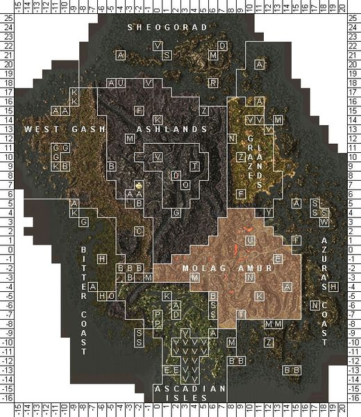
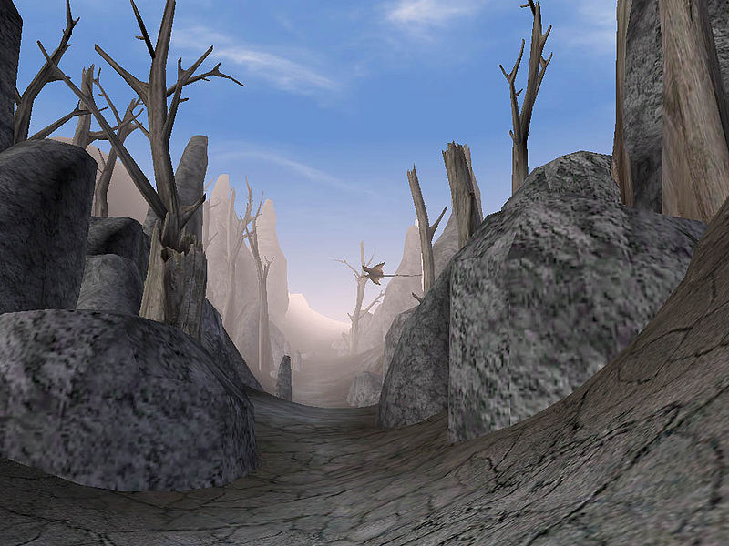
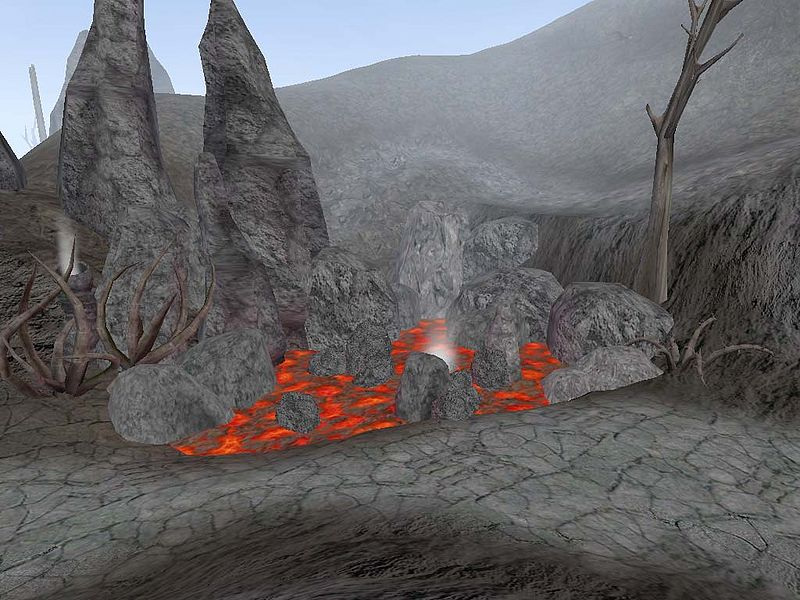
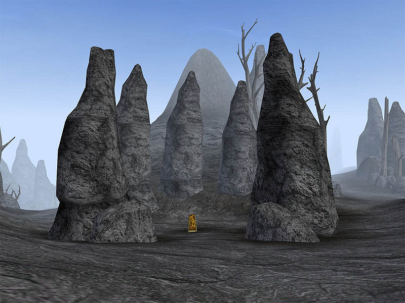

|
 Map of Molag Amur |
|
 A scene in the Molag Amur uplands |
|
 Lava pools and steam vents dot the landscape |
|
 The shrine on Mount Assarnibibi |
The Molag Amur region is essentially the southern part of the Ashlands. The two regions are ecologically similar, both being characterized by an arid landscape whose plant life tends to be Trama Root, Fire Petal, and occasional Chokeweed. Molag Amur is distinguished from the northern Ashlands by the presence of lava pools and rivers on the surface. The land is predominantly dark volcanic rock covered with an overlay of ash and cinder, but of a different makeup and appearance from that of the Ashlands proper. Although it is hard to understand how they survive, fauna include Kagouti, Alit, Cliff Racers, Rats, and Kwama Foragers. There are also various Daedra frequently seen in the area, including Scamps and all types of Atronachs.
Molag Amur is a large region, stretching from just east of Balmora clear to the eastern coast, and from the Grazelands south to Molag Mar. It is an irregular triangle, with a truncated point at the region around the Dwemer ruin of Arkngthand, above the Foyada Mamaea opposite Moonmoth Legion Fort. The northern boundary of the Molag Amur region starts just north of the bridge to Arkngthand, stretches eastward from there along the hills north of Lake Nabia, and turns north after the Foyada Ashur-Dan towards the southwest corner of the Grazelands, near the stronghold of Falensarano, and then runs east to the sea. Roads mainly consists of foyadas, volcanic ravines, leading east and north to the important pilgrim sites of Mount Assarnibibi and Mount Kand.
The lower boundary begins below Arkngthand, over the mountains from Lake Amaya, and curves down above the Ascadian Isles, taking a sharp southerly bend which sees it on three sides of Suran. It then goes due east to Molag Mar. On the east side of Molag Mar, there is an inlet, and Molag Amur lies to the north, and its border follows a rough line north from the eastern shore of that inlet.
The region cannot be said to be dominated by any House: the majority of its inhabitants tend to be renegade necromancers and Mages, but House Telvanni has made inroads into the area with the foundation of Tel Uvirith. Relatively near there, the Erabenimsun Camp is testimony to the presence of Ashlander tribes in the eastern part of this region.
Molag Amur is generally an area one passes through out of necessity, not a place where any but the desperate would make a home.